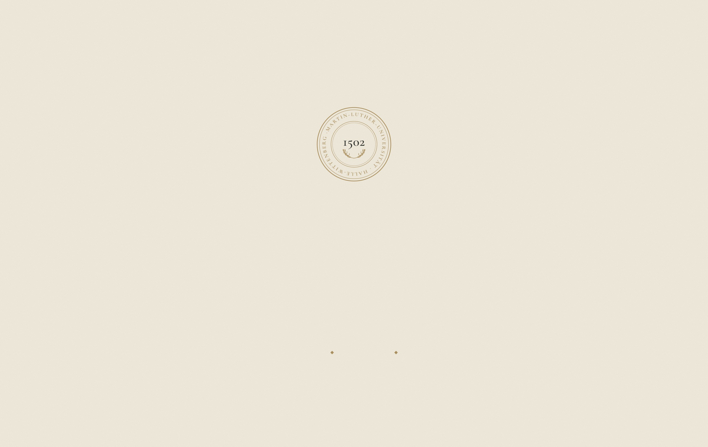
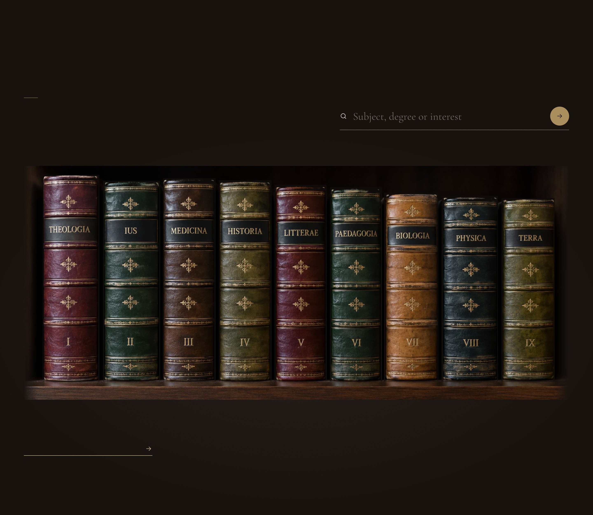
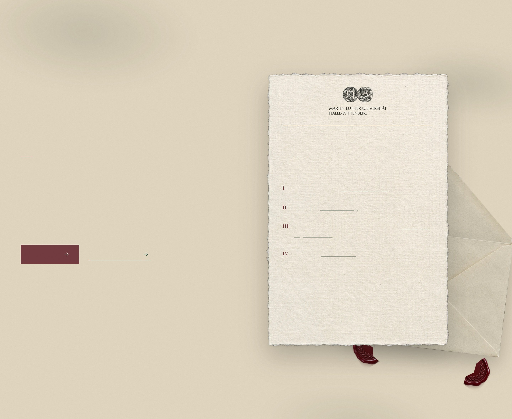
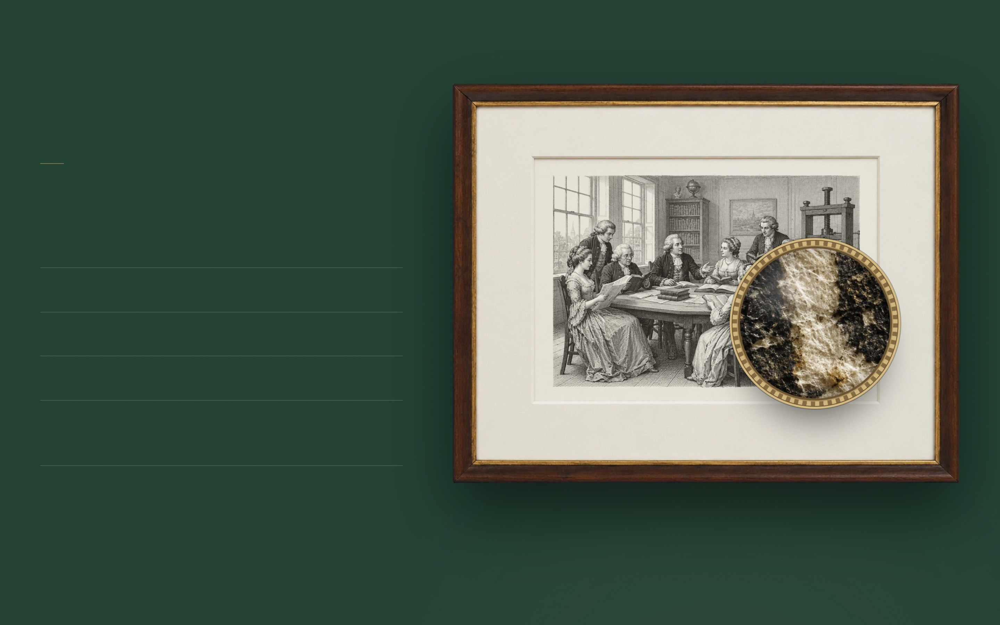
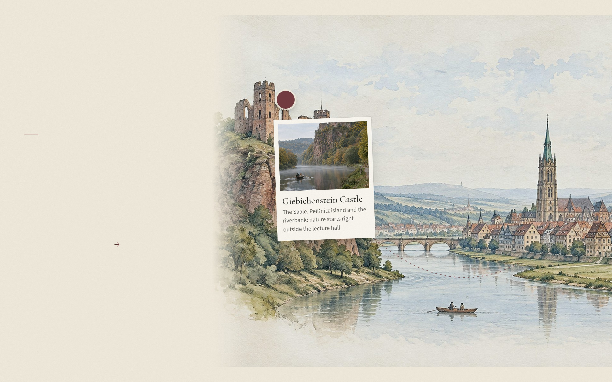
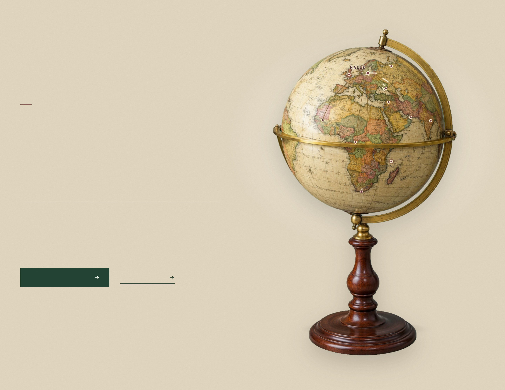
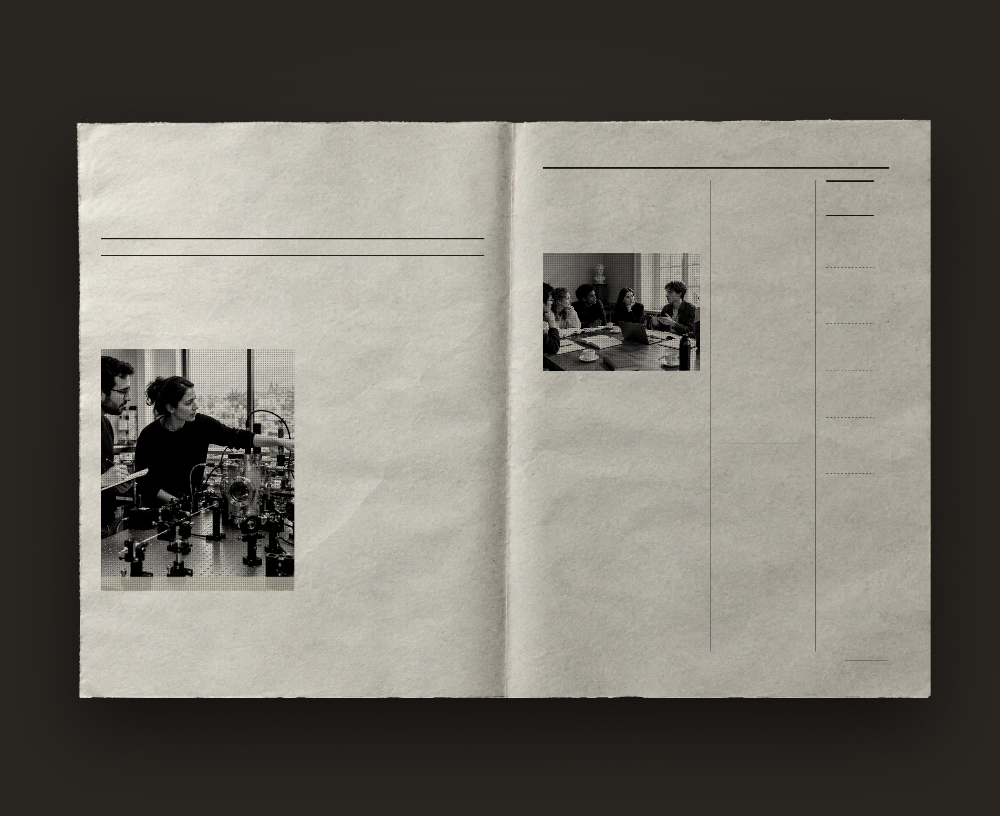
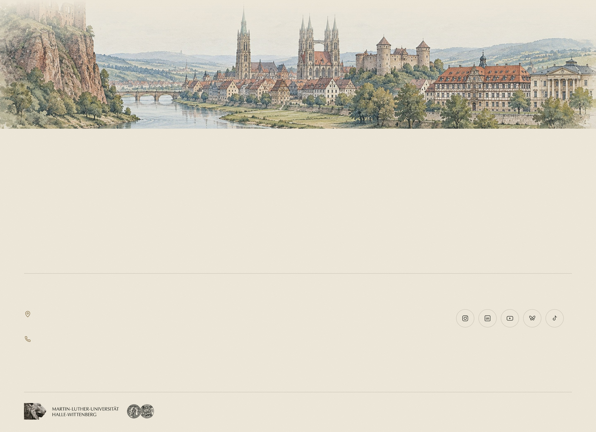

MARTIN LUTHER UNIVERSITY HALLE-WITTENBERG
SINCE 1502
More than 150 degree programmes, nine faculties and a
tradition that reaches from Wittenberg to Halle.
STEP INSIDE
FIND YOUR PROGRAMME
STUDENT ADVISORY
Study
Research
History
Halle
International
DE
/
EN
APPLY

For
more
than
500
years,
Martin
Luther
University
Halle-
Wittenberg
has
stood
for
research
and
teaching
at
the
highest
level.
It
is
a
place
where
knowledge
is
created,
critical
thinking
is
nurtured
and
academic
freedom
is
lived.
WITTENBERG 1502
HALLE 1694
UNITED 1817
CHRONICLE
Two cities. One university.
From the Leucorea in Wittenberg and the Friedrichs-Universität in
Halle grew the largest and most traditional university in Saxony-
Anhalt.
WITTENBERG
The Leucorea is founded
Elector Frederick the Wise founds a university in Wittenberg. Its name,
Leucorea, is the Greek for the white mountain that gave the town its name.
A lecture hall changes the world
Martin Luther, professor of theology at the Leucorea, publishes his 95 Theses. A
year later Philipp Melanchthon arrives in Wittenberg. From here the
Reformation spreads across Europe.
The Friedrichs-Universität in Halle
A new university opens in Halle. With Christian Thomasius, August Hermann
Francke and Christian Wolff it becomes a centre of the German Enlightenment.
The first woman doctor of medicine
Dorothea Christiane Erxleben earns her doctorate in medicine in Halle, the first
woman in Germany to do so. Today the Faculty of Medicine’s learning centre
bears her name.
Two traditions, one university
Wittenberg and Halle are united as one university. In 1834 it moves into its
main building on Universitätsplatz, the Löwengebäude, still the university’s
emblem today.
Excellent in research
Nine faculties, around 350 professors and a Cluster of Excellence: at the Center
for Chiral Electronics, the electronics of tomorrow are taking shape.

STUDY
Nine faculties. Choose your volume.
More than 150 undergraduate and almost 80 graduate programmes.
Take a volume from the shelf and open it.
I
Faculty of Theology
CLICK TO OPEN
ALL DEGREE PROGRAMMES AT A GLANCE

ADMISSION
A letter from
Halle, for you.
Four steps stand between you and your first semester. Student
advisory accompanies you through every one of them.
APPLY NOW
STUDENT ADVISORY
General Student Advisory · Universitätsplatz 10 · 06108 Halle (Saale)
Halle (Saale), November 2026
Dear future student,
four steps stand between you and your first semester at one of
Germany’s oldest universities. We are glad to accompany you
through every one of them.
Explore.
Browse the
programme catalogue
and get to know us
at the Open Day, the Long Night of Science or online.
Get advice.
Student advisory
answers your questions about
subjects, admission and organising your studies.
Apply.
Applications and enrolment are handled
online by the
Registrar’s Office
. Deadlines and documents depend on your
programme.
Arrive.
The
Welcome Portal
helps you with housing,
formalities and your first days in Halle.
We look forward to welcoming you to Halle.
With warm regards
YOUR GENERAL STUDENT ADVISORY SERVICE

RESEARCH
Excellent in research,
strong for the region.
01
Plurality, participation, enlightenment
02
Health and society in transformation
03
From the plant to the macromolecule
04
From mineral raw materials to
nanoelectronics
PLATE I
Halle was a cradle of the German Enlightenment. Today research asks how we can live
together in diversity.
DRAWN YESTERDAY.
MEASURED TODAY.

LOCATION
Halle on the Saale.
Around one of the most beautiful university
squares in Europe lies a city with more than 1,200
years of history, short distances and green
riverbanks along the Saale.
A WALK THROUGH THE CITY
I

OPEN TO THE WORLD
The University of Halle
stands for democracy,
diversity, tolerance
and open-mindedness.
1.754
international students
100+
partner universities
worldwide
3
universities in the Central
German University Alliance:
Halle, Jena, Leipzig
INTERNATIONAL OFFICE
WELCOME-PORTAL

HALLE (SAALE) EDITION
NR. 524
Campus Halensis
MONDAY, 23 NOVEMBER 2026
SINCE 1502
NEWS FROM MARTIN LUTHER UNIVERSITY HALLE-WITTENBERG
RESEARCH · SPINTRONICS
Researchers describe a new type of
atomic oscillation
In the lab: research on new materials for electronics
R
esearchers at Martin Luther
University Halle-Wittenberg
have described a new type of
atomic oscillation. The findings matter
for spintronics, a field that aims to use
the spin of electrons for energy-efficient
electronics. With the Cluster of
Excellence Center for Chiral
Electronics, Halle is one of the centres
of this research in Germany.
READ THE STORY
→
From the university
17.11.2026
90 new
Deutschlandstipendium
scholarships
90 students at the University of
Halle receive a
Deutschlandstipendium. The cert-
ificates will be presented at a cerem-
ony on 24 November.
19.11.2026
Research for
practice:
MLU
awards
transfer
prizes
With its transfer
prizes, the univers-
ity honours res-
earch that finds
its way into pract-
ice. Awards are
made in five
categories.
18.11.2026
Competence
centre for
digital
teaching
MLU is building a
state-wide compet-
ence centre that
supports teachers
in Saxony-Anhalt
with digital
teaching.
MLU in
figures
18.789
students
1.754
international
students
348
professorships
9
faculties
100+
partner
universities
ALL NEWS
→
YOUR STUDIES
Your chapter begins in Halle.
Find your degree programme in seconds and apply online.
150+
degree programmes
9
faculties
100+
partner universities
Find your programme
Bachelor
Master
Teacher training
State examination
SHOW MATCHING PROGRAMMES
APPLY NOW
Student advisory
+49 345 55 20

Martin-Luther-Universität
Halle-Wittenberg
ADDRESS
Universitätsplatz 10
06108 Halle (Saale)
+49 345 55 20
STUDY
Degree programmes
Student advisory
Application and enrolment
Studierenden-Service-Center
UNIVERSITY
Faculties
Research
Careers
Press
FOLLOW
© 2026 Martin-Luther-Universität Halle-Wittenberg
Imprint
Privacy
Accessibility
Creating knowledge. Since 1502.